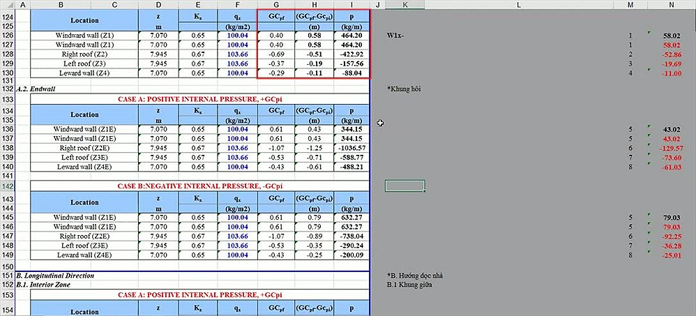

Bài 9.5. Ví dụ DNP Worked example: DNP factory
Ví dụ tính trọn vẹn tải gió ngang nhà lên khung giữa của nhà máy DNP, đối chiếu với bảng tính của bài giảng.
- Thực hiện đủ 7 bước: hình học → $V$ → $K_h$ → $q_h$ → $a$ → $GC_{pf}$ → tải lên khung.
- Đọc được trường hợp nào quyết định kèo (gió lật) và trường hợp nào quyết định chân cột.
1. Tình huống
Bảng tính tải gió DNP của giảng viên cho kèo đón gió $-1171$ kG/m. Trước khi gán vào SAP2000, kỹ sư tính lại độc lập theo đúng câu chữ ASCE 7-10 để biết chênh lệch nằm ở đâu.
2. Nội dung chính
Trình tự tính (gió ngang nhà, khung giữa):
- $h_r$, $h$, $\theta$; kiểm tra $h \le 18$ m và $h \le B_{\min}$.
- $V = V_{700}$ từ $W_0$ ((9.q3)).
- $K_h$ tại chiều cao trung bình mái $h$ (dạng B: $z \ge 9{,}1$ m).
- $q_h = 0{,}0613K_hK_{zt}K_dV^2$ (daN/m²).
- $a$ theo ((9.5)); vùng biên rộng $2a$.
- $GC_{pf}$ nội suy theo $\theta$.
- $p = q_h[(GC_{pf}) \mp 0{,}18]$; $q = p \times$ bước khung.
3. Ví dụ tính toán
Số liệu: nhịp $B = 54$ m, dài $L = 60$ m, cao đỉnh cột $h_e = 9$ m, độ dốc mái $i = 10\,\%$, bước khung 12 m, vùng gió II, dạng địa hình B, nhà kín.
Lời giải
Bước 1 – Hình học. Cao độ đỉnh mái $h_r = 9 + 27 \times 0{,}10 = 11{,}70$ m. Chiều cao trung bình mái $h = (9 + 11{,}70)/2 = 10{,}35$ m. Góc dốc $\theta = \arctan 0{,}10 = 5{,}71°$. Điều kiện nhà thấp tầng: $h = 10{,}35 \le 18$ m và $h \le 54$ m. Thỏa.
Bước 2 – Vận tốc gió. Vùng II: $V = \tfrac{1{,}26}{0{,}91}\sqrt{95/0{,}0613} = 54{,}51$ m/s.
Bước 3 – $K_z$ tại $h$. Nội suy Bảng 28.3-1 (B) giữa 9,1 m (0,70) và 12,2 m (0,76): $K_h = 0{,}724$.
Bước 4 – Áp lực vận tốc.
Bài giảng lấy $K_h = 0{,}72$ nên được $q_h = 112{,}18$ kG/m²; chênh lệch dưới 1 %.
Bước 5 – Vùng biên. $a = \min(5{,}4;\ 4{,}14) = 4{,}14$ m ≥ $\max(2{,}16;\ 0{,}9)$. Vùng biên rộng $2a = 8{,}28$ m.
Bước 6 – $GC_{pf}$ ($\theta = 5{,}71°$, nội suy giữa 5° và 20°).
| Vùng | 1 | 2 | 3 | 4 | 1E | 2E | 3E | 4E |
|---|---|---|---|---|---|---|---|---|
| $GC_{pf}$ | 0,406 | −0,690 | −0,375 | −0,297 | 0,619 | −1,070 | −0,538 | −0,440 |
Bước 7 – Áp lực lên khung giữa (bước khung 12 m), gió ngang nhà.
| Vùng | $GC_{pf}$ | $+GC_{pi}$: $p$ (kG/m²) | $q$ (kG/m) | $-GC_{pi}$: $p$ (kG/m²) | $q$ (kG/m) |
|---|---|---|---|---|---|
| 1 – tường đón gió | 0,406 | 25,3 | 304 | 65,7 | 788 |
| 2 – mái đón gió | −0,690 | −97,5 | −1170 | −57,2 | −686 |
| 3 – mái khuất gió | −0,375 | −62,2 | −746 | −21,9 | −262 |
| 4 – tường khuất gió | −0,297 | −53,5 | −642 | −13,1 | −157 |
Bảng 9.6. Tải gió phân bố trên khung giữa, trường hợp W1X (+i) và W2X (−i)
So với bài giảng. Giảng viên làm tròn $GC_{pf}$ theo bảng (vùng 1: 0,41; 3: −0,38; 4: −0,30) và tính tường với $q_z$ tại cao độ đỉnh cột (9 m, $q_z = 108{,}01$ kG/m²). Theo câu chữ của Mục 28.4.1, mọi bề mặt dùng $q_h$. Cách của giảng viên cho tải tường nhỏ hơn khoảng 3,5 %.
Đọc kết quả: trường hợp +i cho mái bị hút lên mạnh nhất (−1170 kG/m; bài giảng: −1171 kG/m), quyết định kiểm tra kèo dưới tác dụng gió lật (tổ hợp 0,6D + 0,6W). Trường hợp −i cho tường đón gió chịu đẩy lớn nhất, quyết định mô men chân cột.
4. Thực hành SAP2000
- Excel bảng tải gió
- sheet 2.load
- A. Transverse Direction
- Case A/B (±GCpi)

5. Lỗi thường gặp
- Tính $h$ bằng cao độ đỉnh mái (11,70 m) thay vì chiều cao trung bình mái (10,35 m).
- Dùng tải vùng giữa (1–4) cho khung đầu hồi và khung thứ hai, vốn nằm trong vùng biên $2a = 8{,}28$ m.
6. Luyện tập
Trong Bảng 9.6, trường hợp nào gây hút mái lớn nhất và dùng để kiểm tra kèo với tổ hợp $0{,}6D + 0{,}6W$?
Gợi ý
So sánh tải vùng 2 trong hai cột của Bảng 9.6.
Lời giải
Vùng 2: $+GC_{pi}$ cho $-1170$ kG/m, $-GC_{pi}$ chỉ $-686$ kG/m → W1X quyết định kèo khi gió lật.
Nhà máy DNP ($q_h = 112{,}1$ daN/m²). Tính áp lực $p$ lên mái đón gió trong vùng biên (vùng 2E), trường hợp $+GC_{pi}$.
Gợi ý
Vùng 2E: $GC_{pf} = -1{,}07$ (không đổi giữa 5° và 20°).
Lời giải
$p = 112{,}1(-1{,}07 - 0{,}18) = 112{,}1 \times (-1{,}25) = -140{,}1$ daN/m² (hút).
Giả sử nhà máy DNP đặt ở vùng gió III ($W_0 = 125$ daN/m²), các số liệu khác giữ nguyên ($K_h = 0{,}724$; bước khung 12 m). Tính tải phân bố lên kèo đón gió (vùng 2), trường hợp $+GC_{pi}$.
Gợi ý
$V = 62{,}53$ m/s (Bảng 9.2); $q_h = 0{,}0613K_hK_dV^2$.
Lời giải
$q_h = 0{,}0613 \times 0{,}724 \times 0{,}85 \times 62{,}53^2 = 147{,}5$ daN/m²; $p = 147{,}5(-0{,}69 - 0{,}18) = -128{,}3$ daN/m²; $q = -128{,}3 \times 12 = -1540$ daN/m.
- DNP: $h = 10{,}35$ m, $\theta = 5{,}71°$, $V = 54{,}51$ m/s, $K_h = 0{,}724$, $q_h = 112{,}1$ kG/m², $a = 4{,}14$ m.
- Kèo đón gió: $-1170$ kG/m (W1X, $+GC_{pi}$); tường đón gió: $+788$ kG/m (W2X, $-GC_{pi}$).